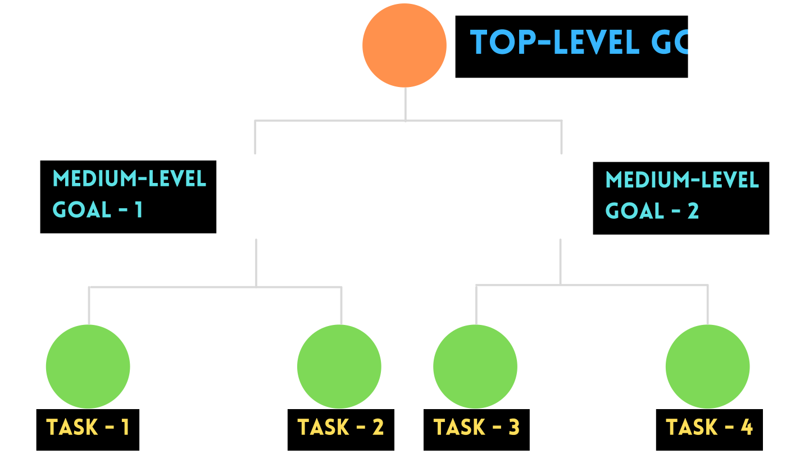

What are the real-life instances?
- Colonel Harland Sanders - KFC owner knocked 1009 doors to sell his
KFC for the first time.
- Thomas Alva Edison failed 1000 times before inventing a bulb.
- Elon Musk – Both Tesla and SpaceX were on the brink of bankruptcy in
the year 2008.
So, Be prepared for failures when you are persevering your goals.
What is the relation between perseverance and goal?
To persevere, he/she must know what is his/her SMART goal
What is SMART goal?
The components of SMART goal are:
SMART is an acronym and it can be specified as below
- Specific
- Measurable
- Achievable
- Relevant to your values
- Time bound
SMART goal will pull you out from your comfort zone.
You can find an example for SMART in below video
Pyramid of Goals
After fidng your goals by following SMART technique, you need to arrange them in the form of a pyramid by keeping low-level goals (usually Habits/ Tasks) at bottom. Your one final goal must be on top and fill middle
part with the Medium-level goals.

- Top level goal is the main SMART goal.
- Medium Level goals are milestones of top-level goal.
- Tasks are daily activities to achieve medium level goal.
Watch the below video to get clarity on Pyramid of Goals
What are the techniques to persevere?
- Write your goal on the wall
- Share your goal with others
- Give rewards yourself
- Avoid Distractions
- Break your mental limitations and stretch your boundaries
- Ask yourself at least once a day – “what I did today to achieve my
goal ?”
- Break down your goal into short term tasks
Few motivational quotes to Persevere :
- “If you want to shine like the sun, first burn like the sun” - APJ Abdul Kalam
- “If you have never failed, you have never tried anything new” - Albert Einstein
- “If you can’t fly then run, if you can’t run then walk,
if you can’t walk then crawl, but whatever you do,
you have to keep moving forward” - Martin Luther King
- “Never give up, because great things take time”